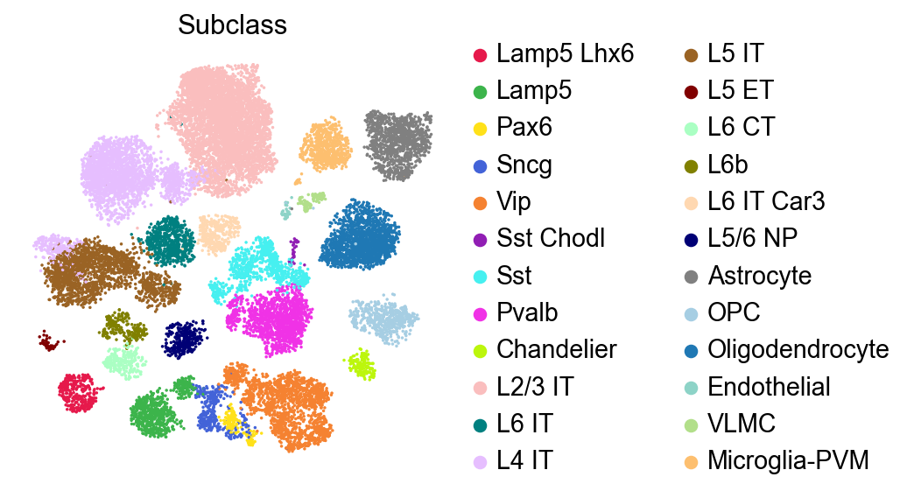
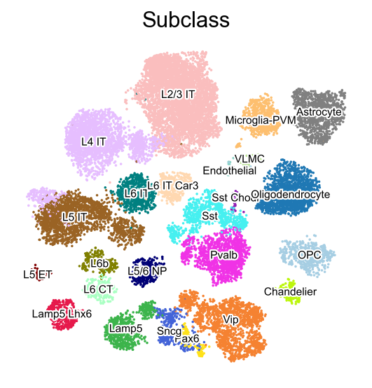
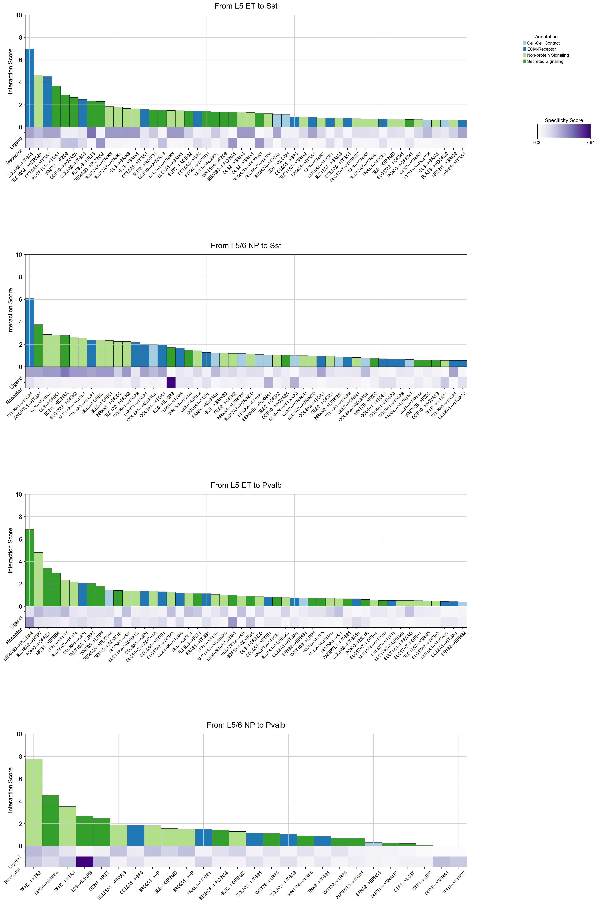
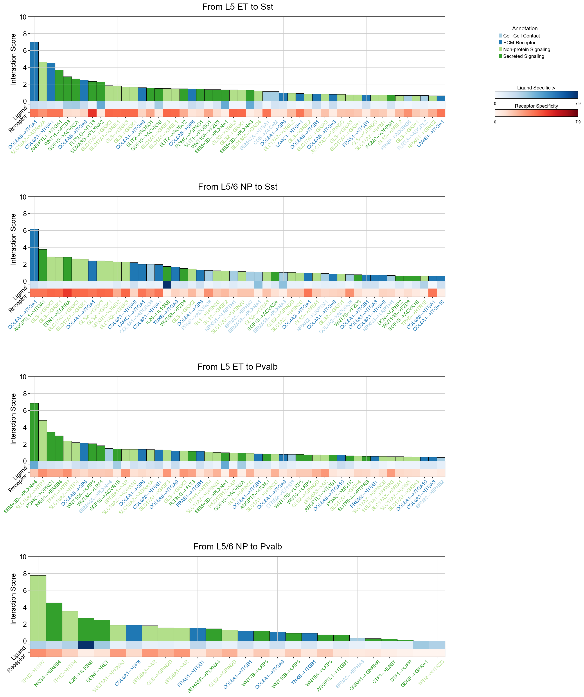
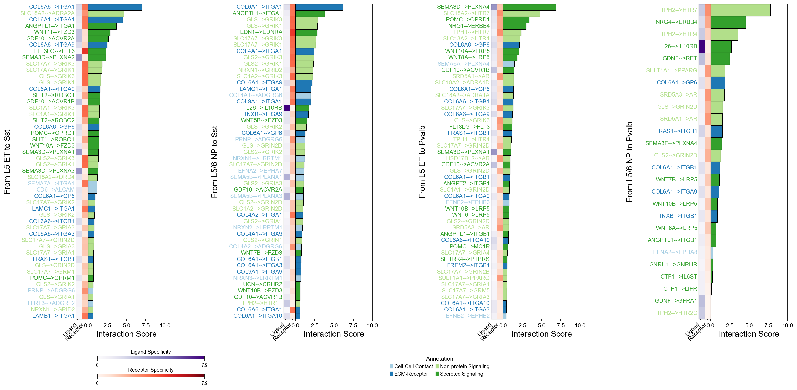
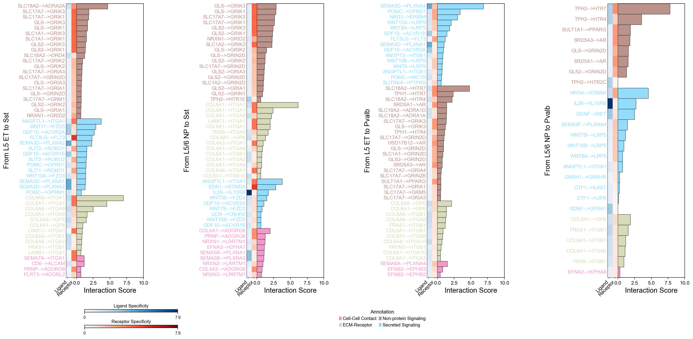
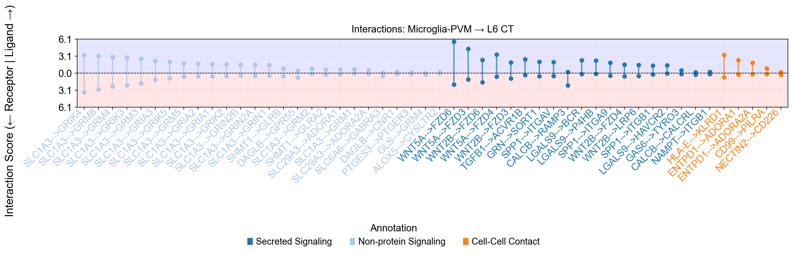
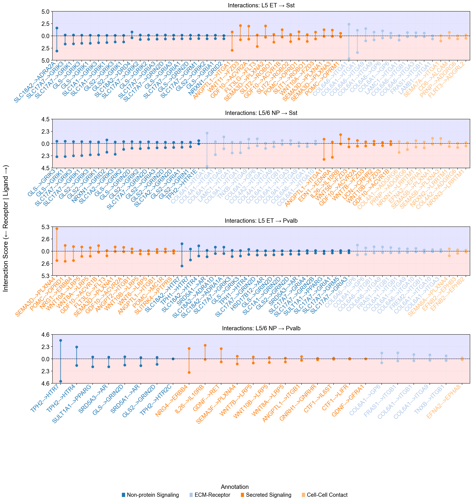
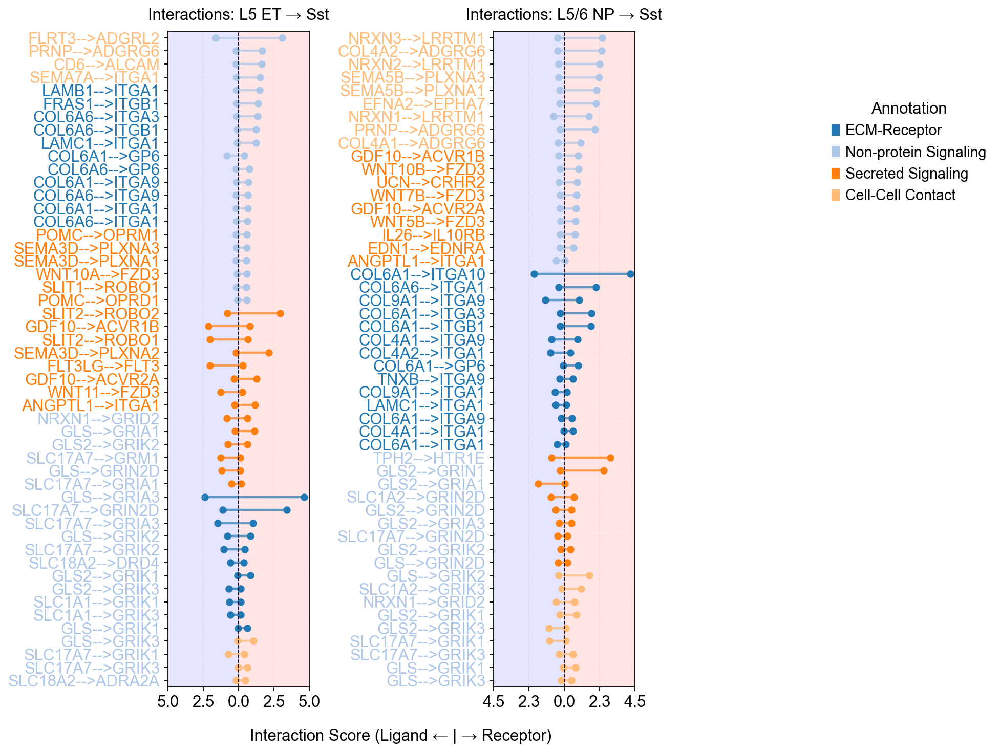

Running SCALAR on human cortex snRNA-seq data for ligand-receptor interaction analysis#
Load basic settings#
Import PIASO#
[1]:
import piaso
/n/data1/hms/neurobio/fishell/mindai/.conda/envs/nca/lib/python3.10/site-packages/tqdm/auto.py:21: TqdmWarning: IProgress not found. Please update jupyter and ipywidgets. See https://ipywidgets.readthedocs.io/en/stable/user_install.html
from .autonotebook import tqdm as notebook_tqdm
[2]:
import numpy as np
import pandas as pd
import scanpy as sc
sc.set_figure_params(dpi=80,dpi_save=300, color_map='viridis',facecolor='white')
from matplotlib import rcParams
# To modify the default figure size, use rcParams.
rcParams['figure.figsize'] = 4, 4
rcParams['font.sans-serif'] = "Arial"
rcParams['font.family'] = "Arial"
sc.settings.verbosity = 3
sc.logging.print_header()
/tmp/ipykernel_4124333/1353975569.py:11: RuntimeWarning: Failed to import dependencies for application/vnd.jupyter.widget-view+json representation. (ModuleNotFoundError: No module named 'ipywidgets')
sc.logging.print_header()
[2]:
| Component | Info |
|---|---|
| Python | 3.10.19 (main, Oct 21 2025, 16:43:05) [GCC 11.2.0] |
| OS | Linux-5.14.0-570.23.1.el9_6.x86_64-x86_64-with-glibc2.34 |
| CPU | 32 logical CPU cores, x86_64 |
| GPU | No GPU found |
| Updated | 2026-01-20 18:33 |
Dependencies
| Dependency | Version |
|---|---|
| natsort | 8.4.0 |
| python-dateutil | 2.9.0.post0 |
| tornado | 6.5.4 |
| llvmlite | 0.46.0 |
| networkx | 3.4.2 |
| kiwisolver | 1.4.9 |
| texttable | 1.7.0 |
| six | 1.17.0 |
| h5py | 3.15.1 |
| setuptools | 80.9.0 |
| prompt_toolkit | 3.0.52 |
| charset-normalizer | 3.4.4 |
| patsy | 1.0.2 |
| pure_eval | 0.2.3 |
| asttokens | 3.0.0 |
| cycler | 0.12.1 |
| jedi | 0.19.2 |
| tqdm | 4.67.1 |
| executing | 2.2.1 |
| joblib | 1.5.3 |
| parso | 0.8.5 |
| igraph | 0.11.9 |
| pytz | 2025.2 |
| torch | 2.9.1 (2.9.1+cu128) |
| leidenalg | 0.10.2 |
| numba | 0.63.1 |
| decorator | 5.2.1 |
| statsmodels | 0.14.6 |
| psutil | 7.0.0 |
| pillow | 12.0.0 |
| debugpy | 1.8.16 |
| stack_data | 0.6.3 |
| ipython | 8.30.0 |
| wcwidth | 0.2.13 |
Copyable Markdown
| Dependency | Version | | ------------------ | ------------------- | | natsort | 8.4.0 | | python-dateutil | 2.9.0.post0 | | tornado | 6.5.4 | | llvmlite | 0.46.0 | | networkx | 3.4.2 | | kiwisolver | 1.4.9 | | texttable | 1.7.0 | | six | 1.17.0 | | h5py | 3.15.1 | | setuptools | 80.9.0 | | prompt_toolkit | 3.0.52 | | charset-normalizer | 3.4.4 | | patsy | 1.0.2 | | pure_eval | 0.2.3 | | asttokens | 3.0.0 | | cycler | 0.12.1 | | jedi | 0.19.2 | | tqdm | 4.67.1 | | executing | 2.2.1 | | joblib | 1.5.3 | | parso | 0.8.5 | | igraph | 0.11.9 | | pytz | 2025.2 | | torch | 2.9.1 (2.9.1+cu128) | | leidenalg | 0.10.2 | | numba | 0.63.1 | | decorator | 5.2.1 | | statsmodels | 0.14.6 | | psutil | 7.0.0 | | pillow | 12.0.0 | | debugpy | 1.8.16 | | stack_data | 0.6.3 | | ipython | 8.30.0 | | wcwidth | 0.2.13 | | Component | Info | | --------- | -------------------------------------------------------- | | Python | 3.10.19 (main, Oct 21 2025, 16:43:05) [GCC 11.2.0] | | OS | Linux-5.14.0-570.23.1.el9_6.x86_64-x86_64-with-glibc2.34 | | CPU | 32 logical CPU cores, x86_64 | | GPU | No GPU found | | Updated | 2026-01-20 18:33 |
Setting paths#
[3]:
save_dir='/n/scratch/users/m/mid166/Result/single-cell/Methods/PIASO'
sc.settings.figdir = save_dir
prefix='SEAAD_SCALAR_CCI_tutorial'
import os
if not os.path.exists(save_dir):
os.makedirs(save_dir)
sc.set_figure_params(dpi=80,dpi_save=300, color_map='viridis',facecolor='white')
rcParams['figure.figsize'] = 4, 4
Load the data#
The 20k subsampled snRNA-seq data from Allen SEA-AD project is available in google drive: https://drive.google.com/file/d/1nH-CRaTQFxJ5pAVpy8_hUQn1nrIcakq2/view?usp=drive_link.
The original data is available in https://portal.brain-map.org/explore/seattle-alzheimers-disease.
mkdir -p /n/scratch/users/m/mid166/Result/single-cell/Enhancer/SEA-AD/
cd /n/scratch/users/m/mid166/Result/single-cell/Enhancer/SEA-AD/
gdrive files download 1nH-CRaTQFxJ5pAVpy8_hUQn1nrIcakq2
[4]:
adata=sc.read('/n/scratch/users/m/mid166/Result/single-cell/Enhancer/SEA-AD/SEA-AD_RNA_MTG_subsample_excludeReference_20k_piaso.h5ad')
[5]:
adata
[5]:
AnnData object with n_obs × n_vars = 20000 × 36601
obs: 'sample_id', 'Neurotypical reference', 'Donor ID', 'Organism', 'Brain Region', 'Sex', 'Gender', 'Age at Death', 'Race (choice=White)', 'Race (choice=Black/ African American)', 'Race (choice=Asian)', 'Race (choice=American Indian/ Alaska Native)', 'Race (choice=Native Hawaiian or Pacific Islander)', 'Race (choice=Unknown or unreported)', 'Race (choice=Other)', 'specify other race', 'Hispanic/Latino', 'Highest level of education', 'Years of education', 'PMI', 'Fresh Brain Weight', 'Brain pH', 'Overall AD neuropathological Change', 'Thal', 'Braak', 'CERAD score', 'Overall CAA Score', 'Highest Lewy Body Disease', 'Total Microinfarcts (not observed grossly)', 'Total microinfarcts in screening sections', 'Atherosclerosis', 'Arteriolosclerosis', 'LATE', 'Cognitive Status', 'Last CASI Score', 'Interval from last CASI in months', 'Last MMSE Score', 'Interval from last MMSE in months', 'Last MOCA Score', 'Interval from last MOCA in months', 'APOE Genotype', 'Primary Study Name', 'Secondary Study Name', 'NeuN positive fraction on FANS', 'RIN', 'cell_prep_type', 'facs_population_plan', 'rna_amplification', 'sample_name', 'sample_quantity_count', 'expc_cell_capture', 'method', 'pcr_cycles', 'percent_cdna_longer_than_400bp', 'rna_amplification_pass_fail', 'amplified_quantity_ng', 'load_name', 'library_prep', 'library_input_ng', 'r1_index', 'avg_size_bp', 'quantification_fmol', 'library_prep_pass_fail', 'exp_component_vendor_name', 'batch_vendor_name', 'experiment_component_failed', 'alignment', 'Genome', 'ar_id', 'bc', 'GEX_Estimated_number_of_cells', 'GEX_number_of_reads', 'GEX_sequencing_saturation', 'GEX_Mean_raw_reads_per_cell', 'GEX_Q30_bases_in_barcode', 'GEX_Q30_bases_in_read_2', 'GEX_Q30_bases_in_UMI', 'GEX_Percent_duplicates', 'GEX_Q30_bases_in_sample_index_i1', 'GEX_Q30_bases_in_sample_index_i2', 'GEX_Reads_with_TSO', 'GEX_Sequenced_read_pairs', 'GEX_Valid_UMIs', 'GEX_Valid_barcodes', 'GEX_Reads_mapped_to_genome', 'GEX_Reads_mapped_confidently_to_genome', 'GEX_Reads_mapped_confidently_to_intergenic_regions', 'GEX_Reads_mapped_confidently_to_intronic_regions', 'GEX_Reads_mapped_confidently_to_exonic_regions', 'GEX_Reads_mapped_confidently_to_transcriptome', 'GEX_Reads_mapped_antisense_to_gene', 'GEX_Fraction_of_transcriptomic_reads_in_cells', 'GEX_Total_genes_detected', 'GEX_Median_UMI_counts_per_cell', 'GEX_Median_genes_per_cell', 'Multiome_Feature_linkages_detected', 'Multiome_Linked_genes', 'Multiome_Linked_peaks', 'ATAC_Confidently_mapped_read_pairs', 'ATAC_Fraction_of_genome_in_peaks', 'ATAC_Fraction_of_high_quality_fragments_in_cells', 'ATAC_Fraction_of_high_quality_fragments_overlapping_TSS', 'ATAC_Fraction_of_high_quality_fragments_overlapping_peaks', 'ATAC_Fraction_of_transposition_events_in_peaks_in_cells', 'ATAC_Mean_raw_read_pairs_per_cell', 'ATAC_Median_high_quality_fragments_per_cell', 'ATAC_Non-nuclear_read_pairs', 'ATAC_Number_of_peaks', 'ATAC_Percent_duplicates', 'ATAC_Q30_bases_in_barcode', 'ATAC_Q30_bases_in_read_1', 'ATAC_Q30_bases_in_read_2', 'ATAC_Q30_bases_in_sample_index_i1', 'ATAC_Sequenced_read_pairs', 'ATAC_TSS_enrichment_score', 'ATAC_Unmapped_read_pairs', 'ATAC_Valid_barcodes', 'Number of mapped reads', 'Number of unmapped reads', 'Number of multimapped reads', 'Number of reads', 'Number of UMIs', 'Genes detected', 'Doublet score', 'Fraction mitochondrial UMIs', 'Used in analysis', 'Class confidence', 'Class', 'Subclass confidence', 'Subclass', 'Supertype confidence', 'Supertype (non-expanded)', 'Supertype', 'Continuous Pseudo-progression Score', 'Severely Affected Donor'
var: 'gene_ids'
uns: 'APOE4 Status_colors', 'Braak_colors', 'CERAD score_colors', 'Cognitive Status_colors', 'Great Apes Metadata', 'Highest Lewy Body Disease_colors', 'LATE_colors', 'Overall AD neuropathological Change_colors', 'Sex_colors', 'Subclass_colors', 'Supertype_colors', 'Thal_colors', 'UW Clinical Metadata', 'X_normalization', 'batch_condition', 'default_embedding', 'neighbors', 'title', 'umap'
obsm: 'X_scVI', 'X_umap'
layers: 'UMIs'
obsp: 'connectivities', 'distances'
[6]:
sc.pl.embedding(adata,
basis='X_umap',
color=['Subclass'],
palette=piaso.pl.color.d_color3,
legend_fontoutline=2,
legend_fontweight=5,
cmap='Spectral_r',
ncols=3,
size=10,
frameon=False)

[7]:
sc.pl.embedding(adata,
basis='X_umap',
color=['Subclass'],
palette=piaso.pl.color.d_color3,
legend_fontoutline=2,
legend_fontsize=7,
legend_fontweight=5,
legend_loc='on data',
cmap='Spectral_r',
ncols=3,
size=10,
frameon=False)

Run COSG#
[8]:
import cosg
[9]:
adata.X.data
[9]:
array([0.8813792 , 2.510722 , 0.8813792 , ..., 0.37347588, 0.37347588,
1.1829159 ], shape=(110359029,), dtype=float32)
[10]:
%%time
groupby='Subclass'
cosg.cosg(adata,
key_added='cosg',
# use_raw=False, layer='log1p', ## e.g., if you want to use the log1p layer in adata
mu=100,
expressed_pct=0.05,
remove_lowly_expressed=True,
n_genes_user=adata.n_vars, ### Use all the genes, to enable the calculation of transformed COSG scores
# n_genes_user=100,
groupby=groupby,
return_by_group=True,
verbosity=1
)
Finished identifying marker genes by COSG, and the results are in adata.uns['cosg'].
CPU times: user 6.62 s, sys: 1.08 s, total: 7.69 s
Wall time: 7.72 s
[11]:
cosg_scores=cosg.indexByGene(
adata.uns['cosg']['COSG'],
# gene_key="names", score_key="scores",
set_nan_to_zero=True,
convert_negative_one_to_zero=True
)
[12]:
cosg_scores=cosg.iqrLogNormalize(cosg_scores)
[13]:
cosg_scores
[13]:
| Lamp5 Lhx6 | Lamp5 | Pax6 | Sncg | Vip | Sst Chodl | Sst | Pvalb | Chandelier | L2/3 IT | ... | L6 CT | L6b | L6 IT Car3 | L5/6 NP | Astrocyte | OPC | Oligodendrocyte | Endothelial | VLMC | Microglia-PVM | |
|---|---|---|---|---|---|---|---|---|---|---|---|---|---|---|---|---|---|---|---|---|---|
| SFTA3 | 9.777716 | 0.00000 | 0.000000 | 0.000000 | 0.0 | 0.000000 | 0.0 | 0.0 | 0.000000 | 0.000000 | ... | 0.000000 | 0.000000 | 0.000000 | 0.000000 | 0.000000 | 0.0 | 0.0 | 0.0 | 0.0 | 0.0 |
| NKX2-1 | 9.543856 | 0.00000 | 0.000000 | 0.000000 | 0.0 | 0.000000 | 0.0 | 0.0 | 0.644213 | 0.000000 | ... | 0.000000 | 0.000000 | 0.000000 | 0.000000 | 0.000000 | 0.0 | 0.0 | 0.0 | 0.0 | 0.0 |
| LINC01344 | 7.395006 | 2.06908 | 0.060524 | 0.000000 | 0.0 | 0.006987 | 0.0 | 0.0 | 0.000000 | 0.000000 | ... | 0.000000 | 0.000000 | 0.000000 | 0.000000 | 0.022696 | 0.0 | 0.0 | 0.0 | 0.0 | 0.0 |
| AL355482.1 | 6.719415 | 0.00000 | 0.000000 | 0.000000 | 0.0 | 0.000000 | 0.0 | 0.0 | 0.000000 | 0.000000 | ... | 0.000000 | 0.000000 | 0.000000 | 0.000000 | 0.000000 | 0.0 | 0.0 | 0.0 | 0.0 | 0.0 |
| HCRTR2 | 6.574552 | 0.00000 | 2.462423 | 0.875931 | 0.0 | 0.007577 | 0.0 | 0.0 | 0.000000 | 0.018037 | ... | 1.399146 | 2.520505 | 0.053144 | 0.050968 | 0.000000 | 0.0 | 0.0 | 0.0 | 0.0 | 0.0 |
| ... | ... | ... | ... | ... | ... | ... | ... | ... | ... | ... | ... | ... | ... | ... | ... | ... | ... | ... | ... | ... | ... |
| AC005104.1 | 0.000000 | 0.00000 | 0.000000 | 0.000000 | 0.0 | 0.000000 | 0.0 | 0.0 | 0.000000 | 0.000000 | ... | 0.000000 | 0.000000 | 0.000000 | 0.000000 | 0.000000 | 0.0 | 0.0 | 0.0 | 0.0 | 0.0 |
| AC104809.2 | 0.000000 | 0.00000 | 0.000000 | 0.000000 | 0.0 | 0.000000 | 0.0 | 0.0 | 0.000000 | 0.000000 | ... | 0.000000 | 0.000000 | 0.000000 | 0.000000 | 0.000000 | 0.0 | 0.0 | 0.0 | 0.0 | 0.0 |
| AC007483.1 | 0.000000 | 0.00000 | 0.000000 | 0.000000 | 0.0 | 0.000000 | 0.0 | 0.0 | 0.000000 | 0.000000 | ... | 0.000000 | 0.000000 | 0.000000 | 0.000000 | 0.000000 | 0.0 | 0.0 | 0.0 | 0.0 | 0.0 |
| AC018359.1 | 0.000000 | 0.00000 | 0.000000 | 0.000000 | 0.0 | 0.000000 | 0.0 | 0.0 | 0.000000 | 0.000000 | ... | 0.000000 | 0.000000 | 0.000000 | 0.000000 | 0.000000 | 0.0 | 0.0 | 0.0 | 0.0 | 0.0 |
| AQP12A | 0.000000 | 0.00000 | 0.000000 | 0.000000 | 0.0 | 0.000000 | 0.0 | 0.0 | 0.000000 | 0.000000 | ... | 0.000000 | 0.000000 | 0.000000 | 0.000000 | 0.000000 | 0.0 | 0.0 | 0.0 | 0.0 | 0.0 |
36601 rows × 24 columns
Load CellChat DB#
The prepared cellchatDB v2 files could be downloaded from https://drive.google.com/drive/folders/1cfj4IZxl5svnG4RO–Fcr2x-bmNokmQN?usp=sharing. The CellChatDB v2 is from jinworks/CellChat.
[14]:
### Load the mouse version
# cellchatdb=pd.read_csv('/n/data1/hms/neurobio/fishell/mindai/Data/single-cell/Fezf2KO/LigandReceptorList/mouse_lr_database_CellChatDB_formatted_v2.csv')
### Load the human version
cellchatdb=pd.read_csv('/n/data1/hms/neurobio/fishell/mindai/Data/single-cell/Fezf2KO/LigandReceptorList/human_lr_database_CellChatDB_formatted_v2.csv')
[15]:
cellchatdb.head()
[15]:
| interaction_name | pathway_name | ligand | receptor | agonist | antagonist | co_A_receptor | co_I_receptor | evidence | annotation | ... | receptor.symbol | receptor.family | receptor.location | receptor.keyword | receptor.surfaceome_main | receptor.surfaceome_sub | receptor.adhesome | receptor.secreted_type | receptor.transmembrane | version | |
|---|---|---|---|---|---|---|---|---|---|---|---|---|---|---|---|---|---|---|---|---|---|
| 0 | TGFB1_TGFBR1_TGFBR2 | TGFb | TGFB1 | TGFBR2 | TGFb agonist | TGFb antagonist | NaN | TGFb inhibition receptor | KEGG: hsa04350 | Secreted Signaling | ... | TGFBR2, TGFBR1 | Protein kinase superfamily, TKL Ser/Thr protei... | Cell membrane, Secreted, Membrane raft, Cell s... | Membrane, Secreted, Disulfide bond, Kinase, Tr... | Receptors | Act.TGFB;Kinase | NaN | NaN | True | CellChatDB v1 |
| 1 | TGFB1_TGFBR1_TGFBR2 | TGFb | TGFB1 | TGFBR1 | TGFb agonist | TGFb antagonist | NaN | TGFb inhibition receptor | KEGG: hsa04350 | Secreted Signaling | ... | TGFBR2, TGFBR1 | Protein kinase superfamily, TKL Ser/Thr protei... | Cell membrane, Secreted, Membrane raft, Cell s... | Membrane, Secreted, Disulfide bond, Kinase, Tr... | Receptors | Act.TGFB;Kinase | NaN | NaN | True | CellChatDB v1 |
| 2 | TGFB2_TGFBR1_TGFBR2 | TGFb | TGFB2 | TGFBR2 | TGFb agonist | TGFb antagonist | NaN | TGFb inhibition receptor | KEGG: hsa04350 | Secreted Signaling | ... | TGFBR2, TGFBR1 | Protein kinase superfamily, TKL Ser/Thr protei... | Cell membrane, Secreted, Membrane raft, Cell s... | Membrane, Secreted, Disulfide bond, Kinase, Tr... | Receptors | Act.TGFB;Kinase | NaN | NaN | True | CellChatDB v1 |
| 3 | TGFB2_TGFBR1_TGFBR2 | TGFb | TGFB2 | TGFBR1 | TGFb agonist | TGFb antagonist | NaN | TGFb inhibition receptor | KEGG: hsa04350 | Secreted Signaling | ... | TGFBR2, TGFBR1 | Protein kinase superfamily, TKL Ser/Thr protei... | Cell membrane, Secreted, Membrane raft, Cell s... | Membrane, Secreted, Disulfide bond, Kinase, Tr... | Receptors | Act.TGFB;Kinase | NaN | NaN | True | CellChatDB v1 |
| 4 | TGFB3_TGFBR1_TGFBR2 | TGFb | TGFB3 | TGFBR2 | TGFb agonist | TGFb antagonist | NaN | TGFb inhibition receptor | KEGG: hsa04350 | Secreted Signaling | ... | TGFBR2, TGFBR1 | Protein kinase superfamily, TKL Ser/Thr protei... | Cell membrane, Secreted, Membrane raft, Cell s... | Membrane, Secreted, Disulfide bond, Kinase, Tr... | Receptors | Act.TGFB;Kinase | NaN | NaN | True | CellChatDB v1 |
5 rows × 28 columns
[16]:
pd.Series(cellchatdb['annotation']).value_counts().head(30)
[16]:
annotation
Secreted Signaling 1211
Non-protein Signaling 749
ECM-Receptor 515
Cell-Cell Contact 476
Name: count, dtype: int64
[17]:
pd.Series(cellchatdb['pathway_name']).value_counts().head(30)
[17]:
pathway_name
Glutamate 222
COLLAGEN 221
WNT 192
LAMININ 165
GABA-A 108
5-HT 85
CCL 66
FGF 60
Ach 58
BMP 57
MHC-I 51
THBS 40
EPHA 36
TENASCIN 36
SEMA3 35
PARs 35
IFN-I 34
CXCL 33
NRXN 32
SLURP 32
ncWNT 31
Adrenaline 27
ADGRL 25
RA 24
NOTCH 24
ANGPTL 20
Adenosine 20
Dopamine 20
Prostaglandin 20
IL1 20
Name: count, dtype: int64
[18]:
# # cellchatdb=cellchatdb.loc[:,['ligand', 'receptor', 'pathway_name']].copy()
cellchatdb=cellchatdb.loc[:,['ligand', 'receptor', 'annotation']].copy()
Run SCALAR#
Here we use the cellchatDB as the database of ligand-receptor interactions to run SCALAR:
[19]:
%%time
specific_interactions_cellchat = piaso.tl.runSCALAR(
adata=adata,
specificity_matrix=cosg_scores,
lr_pairs=cellchatdb,
ligand_col = 'ligand',
receptor_col = 'receptor',
annotation_col='annotation',
sender_cell_types=list(adata.obs['Subclass'].cat.categories.values),
receiver_cell_types=list(adata.obs['Subclass'].cat.categories.values),
n_permutations=1000,
n_nearest_neighbors=30,
chunk_size=500000,
random_seed=42
)
--- Step 1: Validating inputs and filtering LR pairs ---
Filtered out 14 LR pairs that were not found in both the AnnData object and the specificity matrix.
--- Step 2: Calculating all observed interaction scores ---
Found 1691712 potential interactions to test.
--- Step 3: Preparing background gene set for permutation testing ---
Preparing background gene set by calculating mean and variance for all genes...
Building KDTree to find 30 nearest neighbors for each gene...
Finished preparing background gene set.
--- Step 4: Calculating p-values via 1000 permutations (vectorized) ---
Processing cell type pairs: 100%|██████████| 576/576 [00:55<00:00, 10.33it/s]
--- Step 5: Applying FDR (Benjamini/Hochberg) correction per cell-type pair ---
FDR Correction: 100%|██████████| 576/576 [00:01<00:00, 325.56it/s]
Analysis complete.
CPU times: user 1min 3s, sys: 1.68 s, total: 1min 4s
Wall time: 1min 5s
[20]:
specific_interactions_cellchat
[20]:
| ligand | receptor | annotation | sender | receiver | interaction_score | p_value | p_value_fdr | nlog10_p_value_fdr | |
|---|---|---|---|---|---|---|---|---|---|
| 0 | NPY | NPY2R | Secreted Signaling | Sst Chodl | Sst Chodl | 105.240697 | 0.000999 | 0.015984 | 1.796315 |
| 1 | DLL4 | NOTCH4 | Cell-Cell Contact | Endothelial | Endothelial | 87.273885 | 0.000999 | 0.013674 | 1.864110 |
| 2 | DLL4 | NOTCH3 | Cell-Cell Contact | Endothelial | VLMC | 84.300864 | 0.000999 | 0.014956 | 1.825171 |
| 3 | CSF3 | CSF3R | Secreted Signaling | Endothelial | Microglia-PVM | 84.206412 | 0.012987 | 0.112013 | 0.950732 |
| 4 | COL1A2 | SDC4 | ECM-Receptor | VLMC | Astrocyte | 82.803029 | 0.000999 | 0.010209 | 1.991037 |
| ... | ... | ... | ... | ... | ... | ... | ... | ... | ... |
| 1691707 | COL9A1 | ITGA10 | ECM-Receptor | Sncg | L5/6 NP | 0.000000 | 1.000000 | 1.000000 | 0.000000 |
| 1691708 | COL9A1 | ITGA10 | ECM-Receptor | Sncg | Astrocyte | 0.000000 | 1.000000 | 1.000000 | 0.000000 |
| 1691709 | COL9A1 | ITGA10 | ECM-Receptor | Sncg | OPC | 0.000000 | 1.000000 | 1.000000 | 0.000000 |
| 1691710 | COL9A1 | ITGA10 | ECM-Receptor | Sncg | Oligodendrocyte | 0.000000 | 1.000000 | 1.000000 | 0.000000 |
| 1691711 | COL9A1 | ITGA10 | ECM-Receptor | Vip | Astrocyte | 0.000000 | 1.000000 | 1.000000 | 0.000000 |
1691712 rows × 9 columns
[21]:
pd.Series(specific_interactions_cellchat['nlog10_p_value_fdr']>-np.log10(0.2)).value_counts()
[21]:
nlog10_p_value_fdr
False 1655922
True 35790
Name: count, dtype: int64
[22]:
pd.Series(specific_interactions_cellchat['nlog10_p_value_fdr']>-np.log10(0.05)).value_counts()
[22]:
nlog10_p_value_fdr
False 1677660
True 14052
Name: count, dtype: int64
[23]:
specific_interactions_cellchat['CellTypeXCellType']=piaso.pp.getCrossCategories(specific_interactions_cellchat, 'sender', 'receiver')
specific_interactions_cellchat['CellTypeXCellType']=specific_interactions_cellchat['CellTypeXCellType'].astype('str')
specific_interactions_cellchat['ligandXreceptor']=piaso.pp.getCrossCategories(specific_interactions_cellchat, 'ligand', 'receptor', delimiter='-->')
specific_interactions_cellchat['ligandXreceptor']=specific_interactions_cellchat['ligandXreceptor'].astype('str')
[24]:
specific_interactions_cellchat.head()
[24]:
| ligand | receptor | annotation | sender | receiver | interaction_score | p_value | p_value_fdr | nlog10_p_value_fdr | CellTypeXCellType | ligandXreceptor | |
|---|---|---|---|---|---|---|---|---|---|---|---|
| 0 | NPY | NPY2R | Secreted Signaling | Sst Chodl | Sst Chodl | 105.240697 | 0.000999 | 0.015984 | 1.796315 | Sst Chodl@Sst Chodl | NPY-->NPY2R |
| 1 | DLL4 | NOTCH4 | Cell-Cell Contact | Endothelial | Endothelial | 87.273885 | 0.000999 | 0.013674 | 1.864110 | Endothelial@Endothelial | DLL4-->NOTCH4 |
| 2 | DLL4 | NOTCH3 | Cell-Cell Contact | Endothelial | VLMC | 84.300864 | 0.000999 | 0.014956 | 1.825171 | Endothelial@VLMC | DLL4-->NOTCH3 |
| 3 | CSF3 | CSF3R | Secreted Signaling | Endothelial | Microglia-PVM | 84.206412 | 0.012987 | 0.112013 | 0.950732 | Endothelial@Microglia-PVM | CSF3-->CSF3R |
| 4 | COL1A2 | SDC4 | ECM-Receptor | VLMC | Astrocyte | 82.803029 | 0.000999 | 0.010209 | 1.991037 | VLMC@Astrocyte | COL1A2-->SDC4 |
[25]:
len(specific_interactions_cellchat['CellTypeXCellType'].unique())
[25]:
576
[26]:
adata.obs['Subclass'].cat.categories
[26]:
Index(['Lamp5 Lhx6', 'Lamp5', 'Pax6', 'Sncg', 'Vip', 'Sst Chodl', 'Sst',
'Pvalb', 'Chandelier', 'L2/3 IT', 'L6 IT', 'L4 IT', 'L5 IT', 'L5 ET',
'L6 CT', 'L6b', 'L6 IT Car3', 'L5/6 NP', 'Astrocyte', 'OPC',
'Oligodendrocyte', 'Endothelial', 'VLMC', 'Microglia-PVM'],
dtype='object')
[27]:
si_fdr=specific_interactions_cellchat[specific_interactions_cellchat['nlog10_p_value_fdr']>-np.log10(0.5)].copy()
Plot CCI results:#
[28]:
piaso.pl.plotLigandReceptorInteraction(
interactions_df=si_fdr,
specificity_df=cosg_scores,
cell_type_pairs=['L5 ET@Sst', 'L5/6 NP@Sst', 'L5 ET@Pvalb', 'L5/6 NP@Pvalb',],
ligand_receptor_sep='-->',
top_n=50,
y_max=10,
heatmap_cmap='Purples',
shared_legend=True
)

[29]:
# specific_interactions_subset=specific_interactions.loc[
# specific_interactions['annotation'].isin(['Secreted Signaling'])
# ]
specific_interactions_cellchat_subset=specific_interactions_cellchat.loc[
specific_interactions_cellchat['annotation'].isin(['ECM-Receptor'])
]
# specific_interactions_subset=specific_interactions.loc[
# specific_interactions['annotation'].isin(['Cell-Cell Contact'])
# ]
# specific_interactions_cellchat_subset=specific_interactions_cellchat.loc[
# specific_interactions_cellchat['annotation'].isin(['Non-protein Signaling'])
# ]
[30]:
piaso.pl.plotLigandReceptorInteraction(
interactions_df=specific_interactions_cellchat_subset,
specificity_df=cosg_scores,
cell_type_pairs=['L5 ET@Sst', 'L5/6 NP@Sst', 'L5 ET@Pvalb', 'L5/6 NP@Pvalb',],
ligand_receptor_sep='-->',
top_n=50,
y_max=10,
heatmap_cmap='Purples',
fig_height_per_pair=6,
fig_width=20,
shared_legend=True
)

[31]:
piaso.pl.plotLigandReceptorInteraction(
interactions_df=si_fdr,
specificity_df=cosg_scores,
cell_type_pairs=['L5 ET@Sst', 'L5/6 NP@Sst', 'L5 ET@Pvalb', 'L5/6 NP@Pvalb',],
ligand_receptor_sep='-->',
top_n=50,
y_max=10,
heatmap_cmap='Purples',
heatmap_cmap_ligand='Blues',
heatmap_cmap_receptor='Reds',
shared_legend=True,
vertical_layout=False,
fig_height_per_pair=6,
fig_width=20,
color_labels_by_annotation=True,
)

[32]:
piaso.pl.plotLigandReceptorInteraction(
interactions_df=si_fdr,
specificity_df=cosg_scores,
cell_type_pairs=['L5 ET@Sst', 'L5/6 NP@Sst', 'L5 ET@Pvalb', 'L5/6 NP@Pvalb',],
# cell_type_pairs=['L5 NP@SST-Chrna2'],
ligand_receptor_sep='-->',
top_n=50,
y_max=10,
# heatmap_cmap='Purples',
heatmap_cmap_ligand='Purples',
heatmap_cmap_receptor='Reds',
shared_legend=True,
vertical_layout=True,
fig_height_per_pair=6,
fig_width=12,
color_labels_by_annotation=True
)

[33]:
piaso.pl.plotLigandReceptorInteraction(
interactions_df=si_fdr,
specificity_df=cosg_scores,
cell_type_pairs=['L5 ET@Sst', 'L5/6 NP@Sst', 'L5 ET@Pvalb', 'L5/6 NP@Pvalb',],
cell_type_sep='@',
ligand_receptor_sep='-->',
top_n=50,
y_max=10,
# heatmap_cmap='Purples',
heatmap_cmap_ligand='Blues',
heatmap_cmap_receptor='Reds',
barplot_palette=piaso.pl.color.d_color10,
shared_legend=True,
vertical_layout=False,
fig_height_per_pair=6,
fig_width=20,
color_labels_by_annotation=True,
sort_by_category=True,
category_agg_method='sum'
)

[34]:
piaso.pl.plotLigandReceptorInteraction(
interactions_df=si_fdr,
specificity_df=cosg_scores,
cell_type_pairs=['L5 ET@Sst', 'L5/6 NP@Sst', 'L5 ET@Pvalb', 'L5/6 NP@Pvalb',],
# col_cell_type_pair='Category',
# col_annotation= 'ConfirmedCategories',
cell_type_sep='@',
ligand_receptor_sep='-->',
top_n=50,
y_max=10,
# heatmap_cmap='Purples',
heatmap_cmap_ligand='Blues',
heatmap_cmap_receptor='Reds',
barplot_palette=piaso.pl.color.d_color10,
shared_legend=True,
vertical_layout=True,
fig_height_per_pair=6,
fig_width=12,
color_labels_by_annotation=True,
sort_by_category=True,
# category_agg_method='sum'
)

Lollipop plot#
[35]:
si_fdr.head()
[35]:
| ligand | receptor | annotation | sender | receiver | interaction_score | p_value | p_value_fdr | nlog10_p_value_fdr | CellTypeXCellType | ligandXreceptor | |
|---|---|---|---|---|---|---|---|---|---|---|---|
| 0 | NPY | NPY2R | Secreted Signaling | Sst Chodl | Sst Chodl | 105.240697 | 0.000999 | 0.015984 | 1.796315 | Sst Chodl@Sst Chodl | NPY-->NPY2R |
| 1 | DLL4 | NOTCH4 | Cell-Cell Contact | Endothelial | Endothelial | 87.273885 | 0.000999 | 0.013674 | 1.864110 | Endothelial@Endothelial | DLL4-->NOTCH4 |
| 2 | DLL4 | NOTCH3 | Cell-Cell Contact | Endothelial | VLMC | 84.300864 | 0.000999 | 0.014956 | 1.825171 | Endothelial@VLMC | DLL4-->NOTCH3 |
| 3 | CSF3 | CSF3R | Secreted Signaling | Endothelial | Microglia-PVM | 84.206412 | 0.012987 | 0.112013 | 0.950732 | Endothelial@Microglia-PVM | CSF3-->CSF3R |
| 4 | COL1A2 | SDC4 | ECM-Receptor | VLMC | Astrocyte | 82.803029 | 0.000999 | 0.010209 | 1.991037 | VLMC@Astrocyte | COL1A2-->SDC4 |
[36]:
adata.obs['Subclass'].cat.categories
[36]:
Index(['Lamp5 Lhx6', 'Lamp5', 'Pax6', 'Sncg', 'Vip', 'Sst Chodl', 'Sst',
'Pvalb', 'Chandelier', 'L2/3 IT', 'L6 IT', 'L4 IT', 'L5 IT', 'L5 ET',
'L6 CT', 'L6b', 'L6 IT Car3', 'L5/6 NP', 'Astrocyte', 'OPC',
'Oligodendrocyte', 'Endothelial', 'VLMC', 'Microglia-PVM'],
dtype='object')
[37]:
piaso.pl.plotLigandReceptorLollipop(
si_fdr,
specificity_df=cosg_scores,
cell_type_pairs=[
'Microglia-PVM@L6 CT'
],
top_n=50,
col_cell_type_pair='CellTypeXCellType', ## Specify the cell type conlumn
# col_annotation= 'annotation',
sort_by_category=True,
fig_height_per_pair=4,
fig_width=16,
vertical_layout=False,
background_colors=True,
# show_grid=False,
logfc_range=1, ### To control the log fold chaneg range
base_circle_size=30,
# size_dramatic_level=1,
color_labels_by_annotation=True,
# score_range_max=8, score_range_min=-8, ### To control the y-axis ranges
)
Warning: Column 'avg_log2FC' not found. Using default circle size.
Using external specificity dataframe with 36601 genes and 24 cell types.

[38]:
piaso.pl.plotLigandReceptorLollipop(
si_fdr,
specificity_df=cosg_scores,
cell_type_pairs=['L5 ET@Sst', 'L5/6 NP@Sst', 'L5 ET@Pvalb', 'L5/6 NP@Pvalb',
],
top_n=50,
col_cell_type_pair='CellTypeXCellType', ## Specify the cell type conlumn
# col_annotation= 'annotation',
sort_by_category=True,
fig_height_per_pair=4,
fig_width=16,
vertical_layout=False,
background_colors=True,
# show_grid=False,
logfc_range=1, ### To control the log fold chaneg range
base_circle_size=30,
# size_dramatic_level=1,
color_labels_by_annotation=True,
# score_range_max=8, score_range_min=-8, ### To control the y-axis ranges
)
Warning: Column 'avg_log2FC' not found. Using default circle size.
Using external specificity dataframe with 36601 genes and 24 cell types.

[39]:
piaso.pl.plotLigandReceptorLollipop(
si_fdr,
specificity_df=cosg_scores,
cell_type_pairs=['L5 ET@Sst', 'L5/6 NP@Sst', ],
top_n=50,
col_cell_type_pair='CellTypeXCellType', ## Specify the cell type conlumn
# col_annotation= 'annotation',
sort_by_category=True,
fig_height_per_pair=10,
fig_width=5,
vertical_layout=True,
background_colors=True,
# show_grid=False,
logfc_range=1, ### To control the log fold chaneg range
base_circle_size=30,
# size_dramatic_level=1,
color_labels_by_annotation=True,
# score_range_max=8, score_range_min=-8, ### To control the y-axis ranges
)
Warning: Column 'avg_log2FC' not found. Using default circle size.
Using external specificity dataframe with 36601 genes and 24 cell types.
